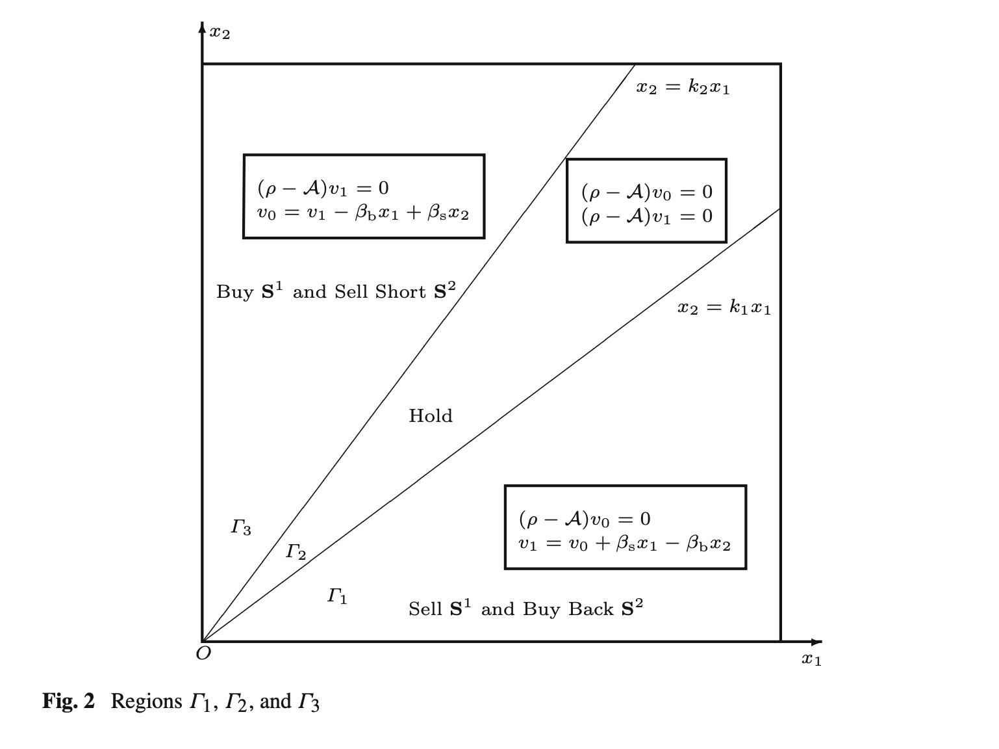
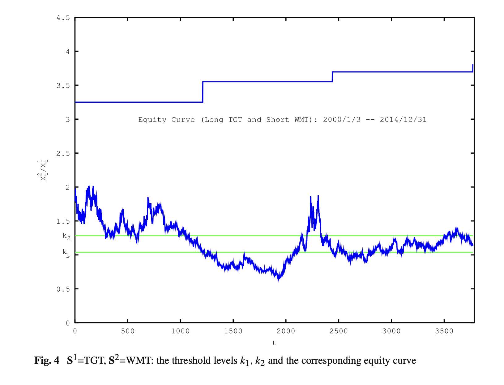

赞赏我的开发


微信

支付宝
配对交易是最经典的市场中性策略之一。这篇2017年发表于 JOTA 的论文（Tie, Zhang & Zhang）去掉了传统配对交易对"均值回归"的依赖，直接在几何布朗运动（GBM）下求出最优买卖阈值的闭式解，并用 Target / Walmart 做了15年样本外回测。本文解读论文的关键公式与实证结论，并探讨它在实际市场中的落地前景。
原文：Tie, Zhang & Zhang, "An Optimal Strategy for Pairs Trading Under Geometric Brownian Motions", Journal of Optimization Theory and Applications (2017). 论文原文 PDF 下载
配对交易的核心动作很简单：选两只股票，持续跟踪它们的相对强弱；当价差扩大到一定程度，做空强势股、做多弱势股，赌两者相对强弱反转。1980年代由摩根士丹利 Tartaglia 量化团队发扬光大，最大的优点是市场中性——涨跌市都能赚钱。
传统配对交易模型通常假设价差服从均值回归，这带来一个严重限制：可选的股票对基本只能是同行业高度相关的股票。这篇论文的突破在于：去掉均值回归假设，允许股价服从一般的几何布朗运动，用动态规划求最优交易时机，并得到了闭式解——最优策略由两条阈值线刻画，而非常数阈值。
1. 价格模型（GBM）
两只股票价格 $X^1$、$X^2$ 服从：
$$ dX^1 = X^1(\mu_1dt + \sigma_{11}dW^1 + \sigma_{12}dW^2), \quad dX^2 = X^2(\mu_2dt + \sigma_{21}dW^1 + \sigma_{22}dW^2) $$
$\mu$ 为收益率，$\sigma$ 为波动率，$W^1$、$W^2$ 为布朗运动（允许相关）。
2. 目标：带交易成本的最优停时序列
每次建仓/平仓收取固定比例成本 $K$（记 $\beta_b = 1+K$、$\beta_s = 1-K$）。目标是选择一列停时 $\tau_1 \le \tau_2 \le \cdots$（买入、卖出、买入、卖出……），最大化贴现收益。空仓时在 $\Gamma_3$ 开仓，持仓时在 $\Gamma_1$ 平仓，如此往复。
3. HJB 方程与降维
记价格比 $y = x_2/x_1$，价值函数可降为一元函数 $w(y)$，HJB 方程化为：
$$ \min\lbrace \rho w_0 - Lw_0,\ w_0 - w_1 + \beta_b - \beta_s y \rbrace = 0 $$
$$ \min\lbrace \rho w_1 - Lw_1,\ w_1 - w_0 - \beta_s + \beta_b y \rbrace = 0 $$
其中 $L$ 为二阶微分算子。Euler 方程 $(\rho-L)w = 0$ 的解形如 $y^\delta$，$\delta$ 满足二次方程，解得：
$$ \delta_{1,2} = \frac{1}{2}\left(1 + \frac{\mu_1-\mu_2}{\lambda}\right) \pm \frac{1}{2}\sqrt{\left(1 + \frac{\mu_1-\mu_2}{\lambda}\right)^2 + \frac{4(\rho-\mu_1)}{\lambda}} $$
其中 $\lambda$ 为两股票相对波动率参数；当 $\rho > \mu_1, \mu_2$ 时有 $\delta_1 > 1 > 0 > \delta_2$。
4. 阈值 $k_1$、$k_2$（闭式解）
通过 smooth-fit 条件（价值函数及其一阶导数在阈值处连续），记 $r = k_2/k_1$，先解方程 $f(r) = 0$ 得唯一 $r_0$，再代入论文(12)式即得 $k_1$、$k_2$ 的闭式表达式。最终交易规则如下图：

图：论文 Fig.2。$x_2 = k_1x_1$ 与 $x_2 = k_2x_1$ 两条射线把第一象限分成三个区域：左上 $\Gamma_3$ 开仓、中间 $\Gamma_2$ 持有、右下 $\Gamma_1$ 平仓。
参数校准：用 Target（TGT）、Walmart（WMT）1985–1999 年日收盘估计 $\mu_1 = 0.2059$、$\mu_2 = 0.2459$、$\sigma_{11} = 0.3112$、$\sigma_{22} = 0.2943$ 等；取 $K = 0.1\%$、$\rho = 0.5$，算得 $k_1 = 1.039$、$k_2 = 1.282$。
回测设置（2000/1/3–2014/12/31，15年）：初始资金 10 万美元；每次信号触发用 5 万美元做多 / 5 万美元做空（半仓对冲）；每笔配对交易佣金 5 美元。
收益——论文报告的核心数字：
| 方向 | 交易次数 | 期末资金 |
|---|---|---|
| 做多 TGT / 做空 WMT | 3 笔 | 155,914 美元 |
| 做多 WMT / 做空 TGT（反向） | 2 笔 | 132,340 美元 |
| 合计 | 5 笔 | 盈利 88,254 美元（+88.25%） |
三个关键结论：

图：论文 Fig.4。蓝色锯齿为价格比 $X^2/X^1$，绿线为 $k_1$、$k_2$ 阈值，上方蓝色阶梯为净值曲线——每次价格比上穿 $k_2$ 开仓、下穿 $k_1$ 平仓，净值阶梯式上行。
参数敏感性（论文 Tables 1–5）：